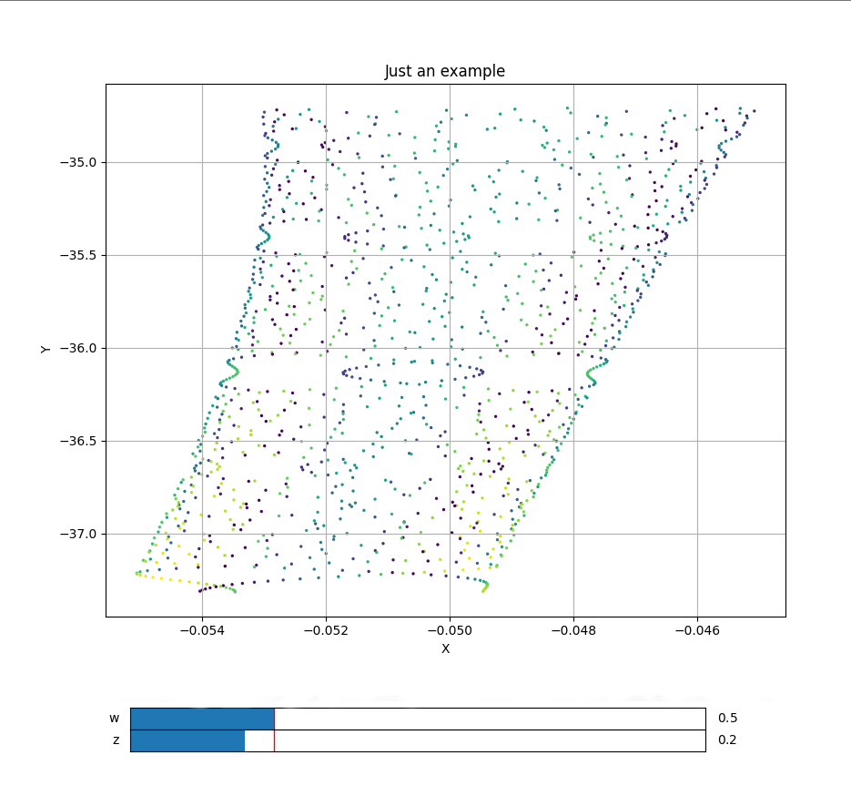

Trajectory2D
class phaseportrait.Trajectory2D(dF, *, Range=None, dF_args={}, n_points=10000, runge_kutta_step=0.01, runge_kutta_freq=1, **kargs)
Inherits from parent class trajectory.
Computes a trajectory on a 2D system given a dF function consisting of 2 args.
Parameters
-
dF : callable
A dF type function.
Key Arguments
-
Range : list
Ranges if the axis in the main plot, by default None. See Defining Range.
-
dF_args : dict
If necesary, must contain the kargs for the
dFfunction, by default {} -
n_points : int
Maximum number of points to be calculated and represented, by default 10000
-
runge_kutta_step : float
Step of 'time' in the Runge-Kutta method, by default 0.01
-
runge_kutta_freq : int
Number of times
dFis aplied between positions saved, by default 1 -
xlabel : str
x label of the plot, by default 'X'
-
ylabel : str
y label of the plot, by default 'Y'
Methods
Inherits methods from parent class trajectory, a brief resume is offered, click on the method to see more information:
-
Adds thermalization steps and random initial position.
-
Adds a trajectory with the given initial position.
-
Adds multiple trajectories with the given initial positions.
-
plot :
Prepares the plots and computes the values. Returns the axis and the figure.
-
Adds a slider for the dF function.
Defining Range
-
A single number. In this case the range is defined from zero to the given number in both axes.
-
A range, such
[lowerLimit , upperLimit]. Both axes will take the same limits. -
Two ranges, such that
[[xAxisLowerLimit , xAxisUpperLimit], [yAxisLowerLimit , yAxisUpperLimit]]
Examples
from phaseportrait import Trajectories2D
import numpy as np
def dF(x,y,*, w=1, z=1):
return w*np.sin(y*y*y), -z*np.exp(x*x)
example = Trajectory2D(dF, n_points=1300, size=2, mark_start_position=True, Title='Just an example')
example.initial_position(1,1)
example.add_slider('w', valinterval=[-1,5])
example.add_slider('z', valinterval=[-1,5])
example.plot()
plt.show()
